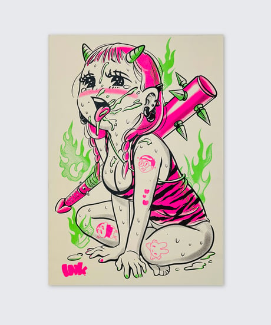
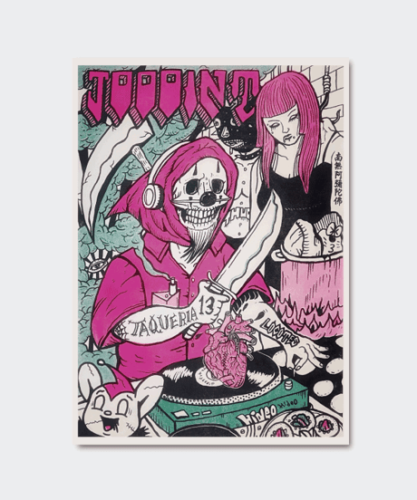
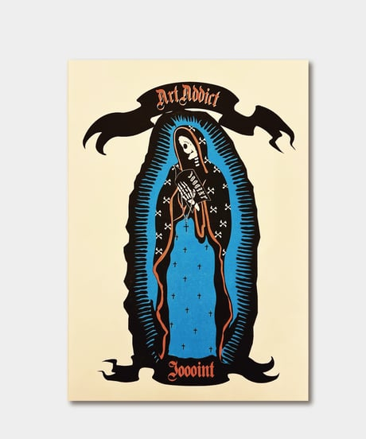
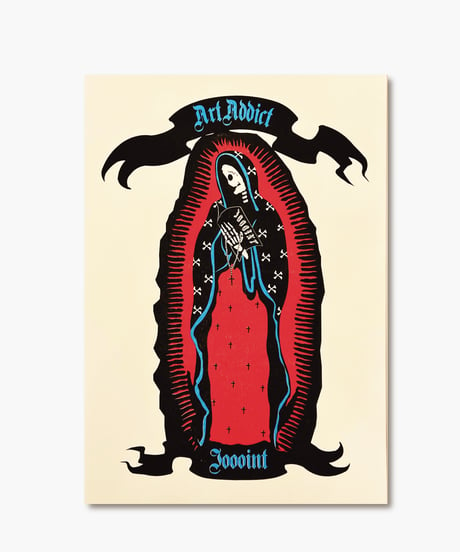
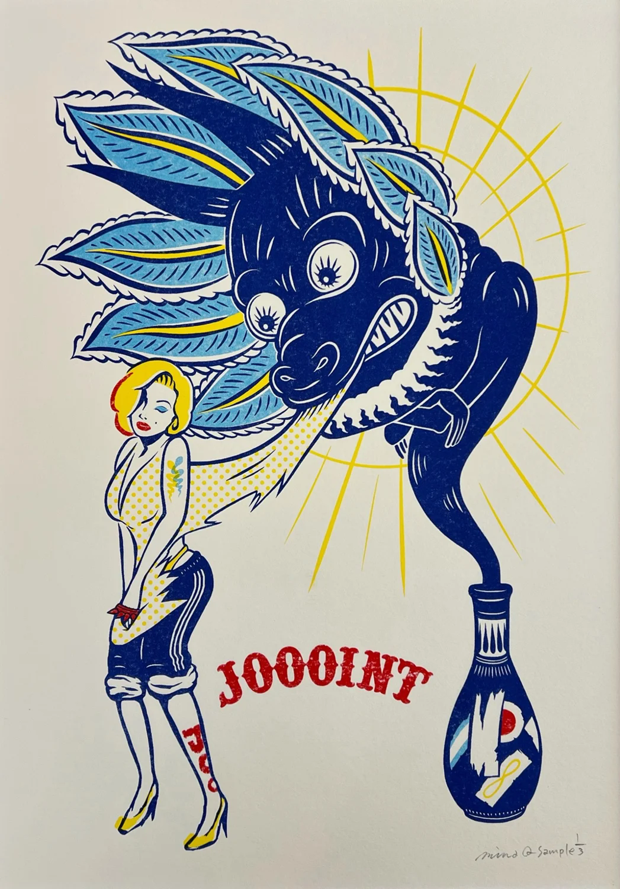
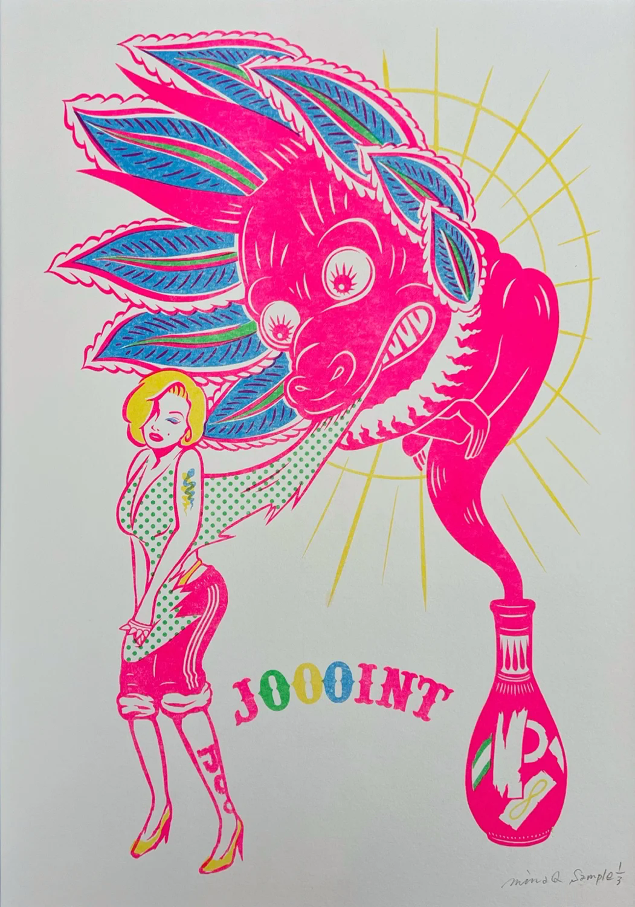
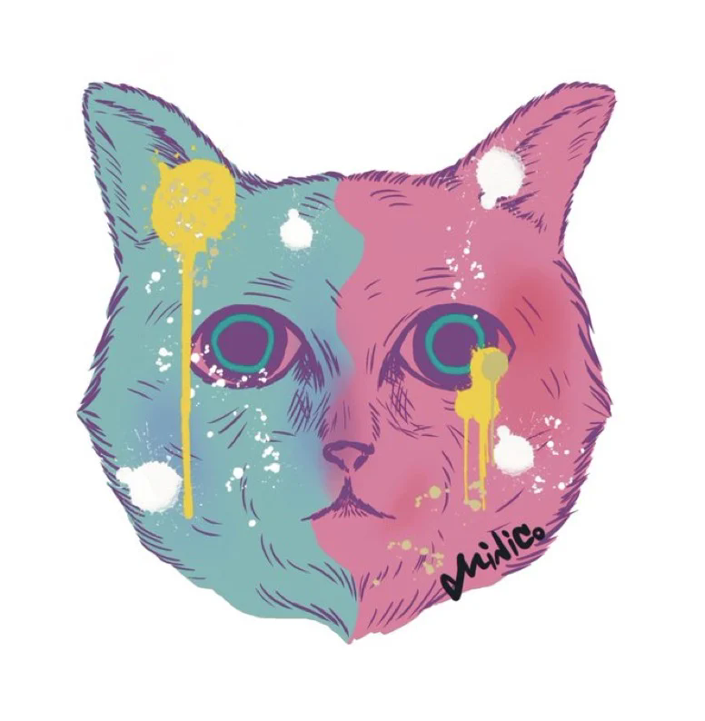
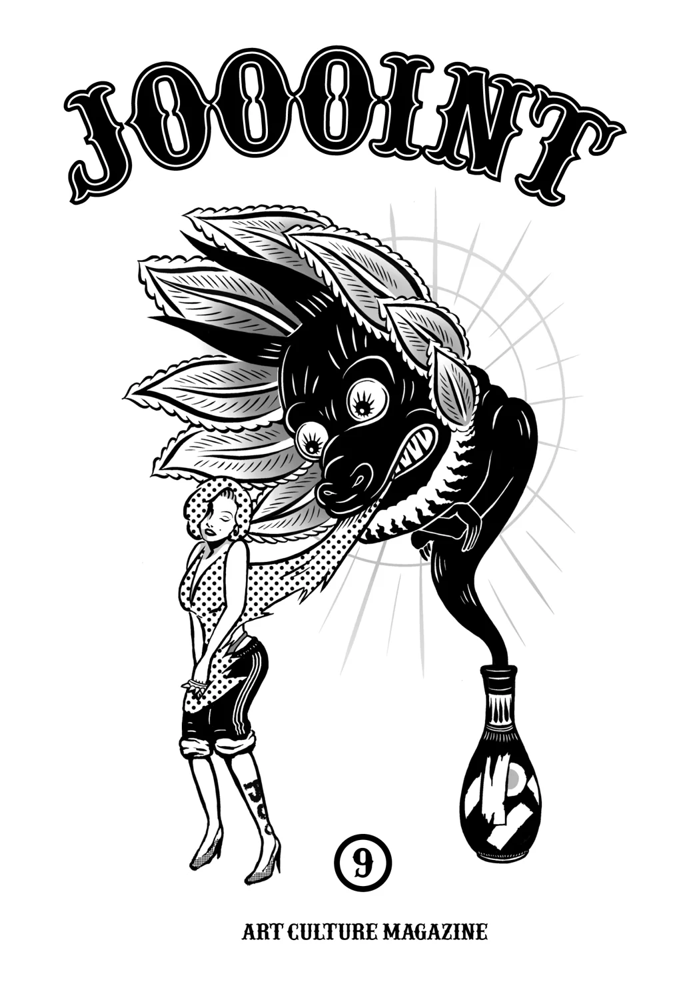

Cover: ゴトウヒデオ
UPCOMING / TOKYO
JOOOINT exhibition 2026
展示会のお知らせ
01 / THE COLLECTION
ISSUE ARCHIVE
表紙から、JOOOINTの世界へ。
Cover: ERROR MIND WORK SHOP
Cover: chanyamaINK
2nd Anniversary / フルカラー特別号
Cover: minaQ
JOOOINT MAGAZINE
JOOOINT MAGAZINE
JOOOINT MAGAZINE
JOOOINT MAGAZINE
JOOOINT MAGAZINE
JOOOINT MAGAZINE
JOOOINT MAGAZINE
JOOOINT MAGAZINE
02 / ART PRINTS
RISOGRAPH
紙とインクで、作品を手元に。

鬼姫
RISOGRAPH · COA付ARTIST / chanyamaINK
商品を見る

死神タケリア
RISOGRAPH · COA付ARTIST / ゴトウヒデオ
商品を見る

Art addict. / Cyan
RISOGRAPH · COA付商品を見る

Art addict. / Red
RISOGRAPH · COA付商品を見る
仕様・付属品・在庫状況は、各商品ページでご確認ください。
JOOOINT GALLERYを見るCOLLABORATION / THE ARTISTS
ARTISTS
JOOOINTと、紙の上でつながる作家たち。
JOOOINTのリソグラフをともにつくるアーティストを紹介します。作品の向こう側にある、それぞれの表現と世界観へ。
FIRST RISOGRAPH COLLABORATION
minaQ
ミナキュー
minaQ × JOOOINT
はじまりのコラボレーション。

青を基調とした配色 · 写真をタップして拡大

ピンクを基調とした配色 · 写真をタップして拡大

ABOUT minaQ
鮮やかな色彩。
ポップの奥に潜む、ひとクセ。
福岡を拠点に活動するアーティスト、minaQ（ミナキュー）。鮮やかな色彩と独創的なキャラクター、エネルギッシュな構図で、ポップでありながらどこか毒気を感じさせる世界を描く。
猫をモチーフにしたアイコニックな表現も、その魅力のひとつ。椎名林檎のアルバム『放生会』のアートワークを手がけるほか、展示やイベントなど、さまざまな場で作品を発表している。
JOOOINTでは、最初のリソグラフコラボレーションをともに制作。大胆なキャラクターとしなやかな人物像が交わる図柄は、配色が変わることで、異なる表情を見せる。紙に刷られた色と線から、minaQの世界を楽しんでほしい。
JOOOINT MAGAZINE NO.09の表紙も担当。モノクロの表紙とカラフルなリソグラフを見比べると、色彩とともに、その線の力強さも感じられる。

Cover artwork by minaQ
JOOOINT NETWORK / STOCKISTS
JOOOINT SPOT
取扱店一覧 / 2026年10月
JOOOINTを手に取れる場所。
Thanks for being the link between us and the streets.
地域名をタップすると取扱店が開きます。店名からGoogleマップ検索へ進めます。
取り扱い号・在庫状況は各店舗へお問い合わせください。
FUKUSHIMA福島3
TOKYO東京16
- もつ焼き炉来世田谷区MAP ↗
- 多世界事務所Ⅱ世田谷区MAP ↗
- KISSA 092世田谷区MAP ↗
- PARK SIDE DONUTS世田谷区MAP ↗
- ちょい呑みバー8カウント渋谷区MAP ↗
- 渋谷シーシャ Singularity Tokyo渋谷区MAP ↗
- WORM TOKYO渋谷区MAP ↗
- MIJ FACTORY HARAJUKU渋谷MAP ↗
- イタリアンバル サンハウス渋谷MAP ↗
- Hair Salon CANNES渋谷区MAP ↗
- もつ焼き豚星品川区MAP ↗
- うなぎ串梅星品川区MAP ↗
- Hair Salon Sa-Ju品川区MAP ↗
- THE GATE杉並区MAP ↗
- 墓場の画廊中野区MAP ↗
- コトトイ目黒区MAP ↗
SAITAMA埼玉5
KANAGAWA神奈川1
YAMANASHI山梨1
FUKUI福井1
AICHI愛知1
MIE三重1
NARA奈良4
KOBE兵庫・神戸1
OKAYAMA岡山2
TOTTORI鳥取1
EHIME愛媛5
FUKUOKA福岡6
KUMAMOTO熊本1
OKINAWA沖縄1
WEBオンライン1
03 / WHO WE ARE
INDEPENDENT.ON PAPER.
好きな表現が、
誰かの手に届くまで。
JOOOINT MAGAZINEは、2023年に始まったアートマガジン。さまざまな作家の作品を、一冊の紙の上でつなぎます。
ページをめくる。気になる絵に出会う。そこから新しい作家を知る。画面の外にも、表現と出会える場所を。
2023ESTABLISHED
B6PRINT FORMAT
ART & CULTUREOUR ROOTS
LET'S JOOOINT.
掲載・お取り扱いのお問い合わせは、InstagramのDMへ。